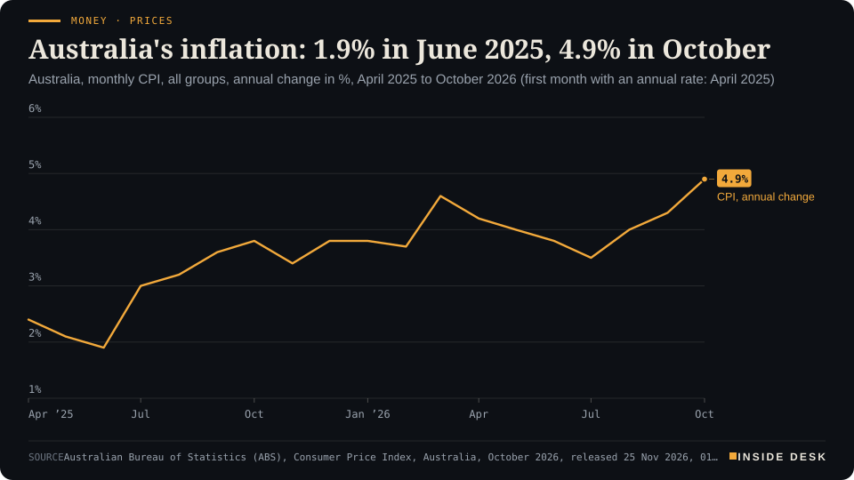
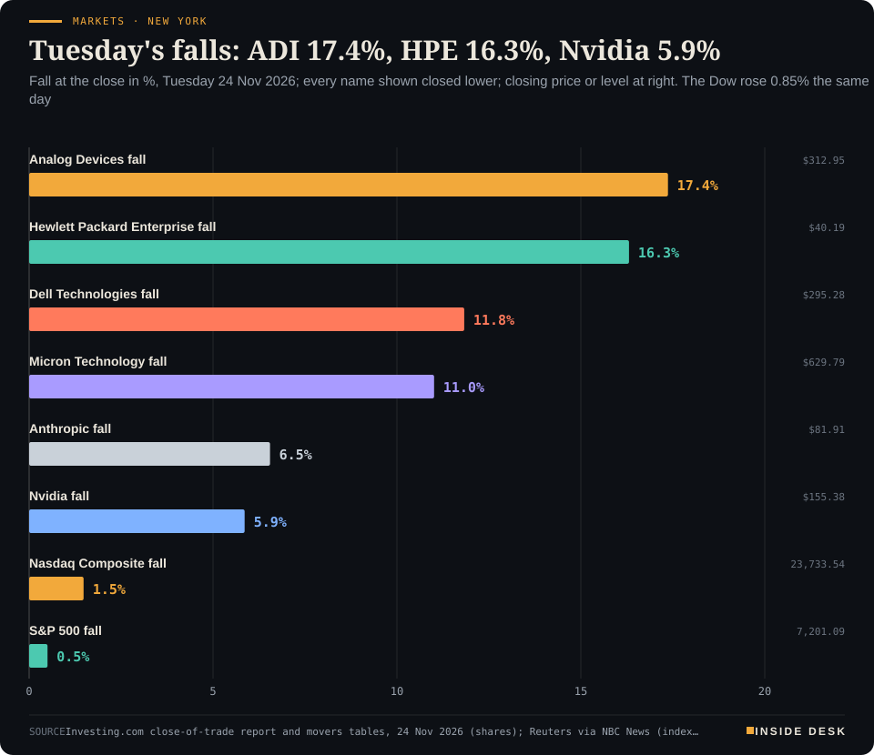
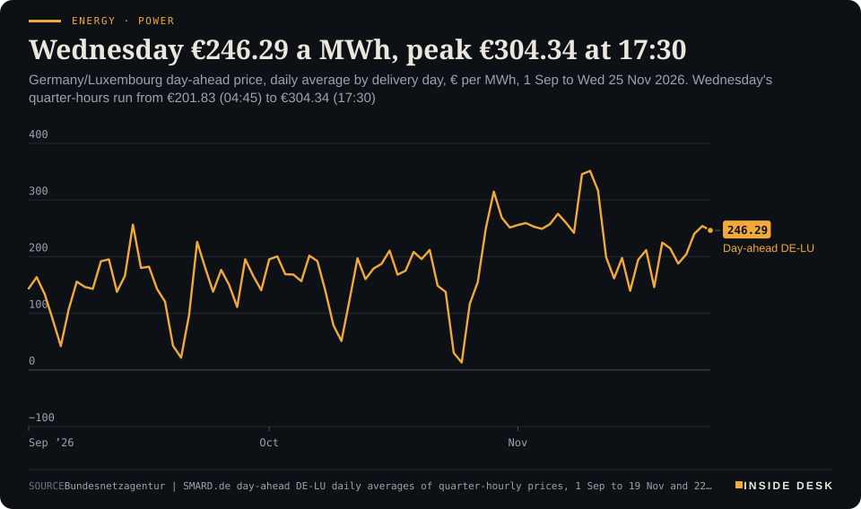

Inside Desk ePaper, Morning ePaper · Wed 25 Nov 2026
Wednesday, 25 November 2026Always free
Inside Desk
Morning ePaperAvailable 06:31 CET · Berlin
Lead · Money, FX & Committees
Two inflation prints on one Wednesday, and both are partly about last year. The committees in Washington and Frankfurt are already leaning the same way.
Two inflation prints are partly about last year, and the committees have already leaned. Also: New York sorts its AI shares, a tariff verdict waits behind its caps, a budget debate, the harvest map, and a Podium vs Print on Patriot missiles.
Money · PricesAustralia's inflation: 1.9% in June 2025, 4.9% in OctoberAustralia, monthly CPI, all groups, annual change in %, April 2025 to October 2026 (first month with an annual rate: April 2025)

Line chart of Australia's monthly consumer price index, annual change in percent, from April 2025 to October 2026. Inflation was 2.4 percent in April 2025, fell to a low of 1.9 percent in June 2025, rose to 3.8 percent by October 2025, peaked at 4.6 percent in March 2026, eased to 3.5 percent in July 2026 and has since risen to 4.0 percent in August, 4.3 percent in September and 4.9 percent in October 2026, the latest month.
Source: Australian Bureau of Statistics (ABS), Consumer Price Index, Australia, October 2026, released 25 Nov 2026, 01:30 CET; retrieved 25 Nov 2026 · source: ABS · CSV
Geo-economics · p. 4
Markets & Macro · p. 5
Energy & Industry · p. 8
Climate & Weather · p. 14
The day in one sentenceBefore you ask what a central bank will do about a price, ask what that price was a year ago.
ContentsInside Desk · Morning ePaper25 November 2026
Two inflation prints are partly about last year, and the committees have already leaned. Also: New York sorts its AI shares, a tariff verdict waits behind its caps, a budget debate, the harvest map, and a Podium vs Print on Patriot missiles.
11 edition pieces · 11 desks · Available 06:31 CET, 25 November 2026
22 ePaper extras, added , 25 November. They appear only in the ePaper and carry their own time.
The website edition follows at 08:30.
The ePaper rhythm
06:30 Morning ePaper (website edition at 08:30)
18:30 Evening ePaper, updated live until 22:30 with an “Updated” time and a Latest page
Sun 10:00 The Sunday Magazine
Berlin time. Every issue is free.
How to read it
Swipe, use the arrow keys or the page strip. Tap any headline for the reading view. Press / to search, t for contents, +/− to zoom. Download the PDF.
LeadInside Desk · Morning ePaper25 November 2026
Money, FX & Committees · Lead · 3 min
Two inflation prints on one Wednesday, and both are partly about last year. The committees in Washington and Frankfurt are already leaning the same way.
Australia’s consumer prices rose 4.9% in the twelve months to October, up from 4.3% in September, the Australian Bureau of Statistics said overnight1. At 14:30 CET today America publishes its own October number, the personal consumption expenditures price index, the gauge by which the Federal Reserve judges its 2% goal3. Forecasters expect the annual rate to rise to about 3.8% from 3.6%, and the core rate, without food and energy, to about 3.2% from 3.1%2.
Two prints, two continents, one shared lesson that rarely makes the headline: a good part of both numbers was decided a year ago.
Australia: the rebate that ended. Electricity prices in Australia rose 25.2% in the year to October, up from 12.8% in September1. The statistician’s explanation is plain: Commonwealth government rebates “reduced household electricity costs last year but are no longer in place,” said Rachael McCririck, the ABS head of price statistics1. Housing as a whole rose 6.4%, transport 10.6%, and automotive fuel 6.3% in October alone, “driven by higher world oil prices”1.
That mixes two kinds of inflation. Fuel is the world arriving at the pump. Electricity is partly a policy decision from last year arriving on this year’s bill. The measure designed to look through such swings, the trimmed mean, rose to 3.8% from 3.6%1. Lower than the headline, yes, but still rising.
Money · PricesAustralia's inflation: 1.9% in June 2025, 4.9% in OctoberAustralia, monthly CPI, all groups, annual change in %, April 2025 to October 2026 (first month with an annual rate: April 2025)
Line chart of Australia's monthly consumer price index, annual change in percent, from April 2025 to October 2026. Inflation was 2.4 percent in April 2025, fell to a low of 1.9 percent in June 2025, rose to 3.8 percent by October 2025, peaked at 4.6 percent in March 2026, eased to 3.5 percent in July 2026 and has since risen to 4.0 percent in August, 4.3 percent in September and 4.9 percent in October 2026, the latest month.
Source: Australian Bureau of Statistics (ABS), Consumer Price Index, Australia, October 2026, released 25 Nov 2026, 01:30 CET; retrieved 25 Nov 2026 · source: ABS · CSV
The chart shows why a single month misleads in both directions. Annual inflation was 1.9% in June 2025, 4.6% in March 2026, 3.5% in July and 4.9% now1. …
Geo-economicsInside Desk · Morning ePaper25 November 2026
Geo-economics · 2 min
Washington is about to publish its overcapacity verdicts. The details that matter are the caps already signed and the truce that expires.
The US Trade Representative is expected to publish, imminently, the findings of its investigation into alleged excess industrial capacity in 16 trading partners, three people with knowledge of the matter told Reuters; new duties on a wide range of goods are expected1. AP, citing its own sources, reports plans to raise tariffs on China, the European Union and 14 other economies2. As of early Wednesday, no rates had been published.
The list: China, India, Japan, South Korea, Mexico, Vietnam, Taiwan, Thailand, Malaysia, Indonesia, Switzerland, Norway, Singapore, Bangladesh, Cambodia and the EU1. The duties would partly replace the tariffs the US Supreme Court struck down in February1.
The dull detail matters most. One person told Reuters the White House is expected to honour the caps written into finalised trade deals: 15% for goods from the EU, Japan and South Korea, 19% for Malaysia, and 20% for China’s second-term tariffs as long as the truce due to expire on 10 January is extended1. Goods from Mexico and Norway are unlikely to see immediate levies1.
For a European exporter, then, the first question is not “how high” but “above or under the cap”. The answer sits in a signed text, not in a press conference.
Geo-economics · Short item · ePaper extra, added
Oil flows to China and India at record pace; grain leaves through the Baltic instead of the Black Sea.
China and India are on track for record Russian oil imports this year, plugging a supply gap caused by the Iran war, according to tanker data and industry sources cited by Reuters1.
Grain is moving differently. The Russian Grain Union says 1.1 million tonnes of grain left Russian ports from 1 to 20 November, 3.6 times less than a year earlier; Azov and Black Sea volumes dropped to 179,600 tonnes from 3.65 million, while Baltic loadings rose 3.4-fold, led by Ust-Luga, Lachstock Consulting’s wire reports2. That puts more Russian cargo through the narrow Gulf of Finland, where a Russian cargo ship was struck at the weekend2.
Sanctions and wars change routes before they change volumes. Watch the ports, not only the press releases.
Geo-economics · Brief · ePaper extra, added
Under the US-China truce due to expire on 10 January, second-term tariffs on Chinese goods are capped at 20%, on top of about 25% from Trump’s first term, Reuters reports1. A 12.5% anti-forced-labour duty already applies to all Chinese imports, leaving only 7.5% to reach the cap1. The two sides are also working to cut tariffs on $30 billion of non-strategic imports each1. The cap, not the announcement, sets the ceiling, until 10 January.
Markets & MacroInside Desk · Morning ePaper25 November 2026
Markets & Macro · 2 min
The day after the biggest rally in months, New York did not sell everything. It sold the guidance and bought the pharmacies.
The Dow Jones Industrial Average rose 423.39 points, or 0.85%, to 50,018.70 on Tuesday. The S&P 500 fell 0.50% to 7,201.09 and the Nasdaq Composite 1.48% to 23,733.541. Eight of the S&P’s 11 sectors closed higher; health care rose 2.88% and consumer staples 1.73%, while technology fell 2.77%3.
The selling was precise. Analog Devices fell 17.37% and Hewlett Packard Enterprise 16.31%2; an index of semiconductors dropped 7.9%, and Nvidia gave back 5.9% of Monday’s record gain1. Retailers that raised their forecasts went the other way: Abercrombie & Fitch jumped 19.7% and Dollar Tree 11.2%1.
Markets · New YorkTuesday's falls: ADI 17.4%, HPE 16.3%, Nvidia 5.9%Fall at the close in %, Tuesday 24 Nov 2026; every name shown closed lower; closing price or level at right. The Dow rose 0.85% the same day

Bar chart of Tuesday 24 November 2026 closing falls in New York, every one lower on the day: Analog Devices down 17.37 percent to $312.95, Hewlett Packard Enterprise down 16.31 percent to $40.19, Dell Technologies down 11.83 percent to $295.28, Micron Technology down 11.01 percent to $629.79, Anthropic down 6.55 percent to $81.91, Nvidia down 5.86 percent to $155.38, the Nasdaq Composite down 1.48 percent to 23,733.54 and the S&P 500 down 0.50 percent to 7,201.09. The Dow Jones Industrial Average rose 0.85 percent the same day.
Source: Investing.com close-of-trade report and movers tables, 24 Nov 2026 (shares); Reuters via NBC News (index closes); retrieved 25 Nov 2026 · reported figures · CSV
The breadth was thinner than the Dow suggests. The New York Stock Exchange recorded 58 new highs and 309 new lows; the Nasdaq 49 highs and 323 lows1. Volume was 18.89 billion shares, a little below the 20-day average1.
The day’s lesson is not “AI is over”. It is that investors read the second page of an earnings release, the one with the margin guidance, more closely the morning after a party. That is a healthy habit, and you can borrow it.
Markets & Macro · Short item · ePaper extra, added
The region's chip markets gave back the Nvidia rally in a morning. Hong Kong went the other way.
South Korea’s Kospi lost 5.6% to 4,725.84 on Wednesday as Samsung Electronics fell 9.1% and SK Hynix 8.6%, AP reports; Japan’s Nikkei 225 dropped 3.6%, and Taiwan’s Taiex tumbled more than 6% as TSMC sank 8.1%1. At its worst in the morning the Taiex was down as much as 7.9%, Al Jazeera reports2.
The selling followed the supply chain. In Tokyo, the chipmaking-equipment maker Tokyo Electron fell 13.5% and the chip tester Advantest 14.5%2. Hong Kong’s Hang Seng bucked the trend, rising by as much as 1.3%2.
The rally on Tuesday was built on one board’s decision in California. The fall on Wednesday was built on the same question that came before it: whether trillions of dollars of AI investment will earn their return2. A board meeting cannot answer that. Invoices, over several years, will.
Markets & Macro · Brief · ePaper extra, added
The DAX fell 319.46 points, or 1.26%, to 25,017.81 on Tuesday, Dow Jones Market Data reports; it has fallen on seven of the past eight trading days and is 6.55% below its record close of 26,771.88 on 12 November1. For the month it is down 3.10%; for the year it is still up 2.15%1. A fortnight of falls has taken back less than a year’s gain. Keep the two numbers side by side.
Politics & InstitutionsInside Desk · Morning ePaper25 November 2026
Politics & Institutions · 2 min
The budget week's general debate opens this morning. The figures were settled before the speeches; one of them was still being added on Wednesday.
The Bundestag holds its general debate on the 2027 budget this morning, on the chancellery’s section of the plan; as usual, Chancellor Friedrich Merz speaks as the second speaker2. The debate is traditionally opened by the leader of the largest opposition party, this time the AfD1.
The numbers are already on paper. The core budget allows about €560 billion of spending in 2027, a record and roughly €36 billion more than in 20261. Defence spending is planned to rise to almost €140 billion1. “Every third euro is financed by credit,” said Lisa Paus, the Green chair of the budget committee1. Including the special funds, new borrowing comes to about €210 billion, ZDFheute calculates1.
One figure was still moving this week. After a late coalition committee, the electricity tax is to fall to the European minimum for all citizens and companies next year, costing the federal government about €5.4 billion in revenue1. A companion law is being discussed in special committee sessions on Wednesday, so that it can be worked into a budget plan of more than 3,500 pages and passed on Friday1.
Listen to the speeches for tone. Read Friday’s vote for the bill.
Politics & Institutions · Short item · ePaper extra, added
Leaders begin consulting on the next ECB president. Three of the bank's six board seats change within five months.
The choice of the next president of the European Central Bank will be one of the dossiers at the extraordinary European Council on 26 and 27 November, António Costa wrote in his invitation letter to the 27 leaders, ANSA reports1. The meeting opens on Thursday at 10:00 with a euro summit in inclusive format; Christine Lagarde and Eurogroup president Kyriakos Pierrakakis are invited to present their analysis, and leaders will thank Lagarde for her leadership since November 20191.
The two candidates are Spain’s Pablo Hernández de Cos and the former Dutch central bank chief Klaas Knot, Euronews reported2. Isabel Schnabel is due to leave the ECB on 3 January for the IMF, and Philip Lane’s term as chief economist ends in May, so three of the six Executive Board members are due to leave in less than five months2. Governments are negotiating the posts as a package2.
That is the dull part of an independent central bank: its independence starts with a staffing calendar that governments respect.
The AfD’s budget spokesman Michael Espendiller said the government takes on “400,000 euros of new debt every minute” (our translation); the Greens’ Sebastian Schäfer called the budget “a shack without foundations” (our translation), ZDFheute reports1. Desk arithmetic on ZDF’s total of about €210 billion of new borrowing: a year has 525,600 minutes, so that is about €399,500 a minute1. The number checks out. Whether the borrowing builds roads and bridges or covers gaps is the question the minutes cannot answer.
Psychology & BehaviourInside Desk · Morning ePaper25 November 2026
Psychology & Behaviour · 2 min
A British survey of young adults finds the gap is not willingness to talk. It is knowing who is qualified to listen.
Almost half of British adults aged 18 to 29, 49%, do not know that anyone can call themselves a therapist, according to a survey of 1,000 young adults for the British Association for Counselling and Psychotherapy (BACP), carried out by 3Gem from 7 to 10 November1.
The same survey found that 37% scroll social media for emotional support and 23% have used chatbots for the same reason; just 25% would consider seeking support from a therapist1. Six in ten, 61%, said hearing musicians they follow talk about their mental health makes them feel less alone1. The BACP is using that finding in a campaign with two musicians, and stresses choosing a therapist on a register accredited by the Professional Standards Authority1.
Across the Atlantic, parents are sceptical of the machines. In a national survey of 572 US parents published in JAMA Pediatrics, 76% said they were “not comfortable at all” or “not too comfortable” with AI-led therapy for their children; diagnostic accuracy was their main concern, the Harvard Gazette reports2.
The constructive reading: young people are not refusing help. They are looking for it in the nearest place. The cheapest improvement is a dull one, a searchable register, made visible.
Psychology & Behaviour · Short item · ePaper extra, added
A British insurer's data finds the youngest workers lonelier, and less likely to find the support they already have.
Workers under 25 are 55% more likely than older colleagues to report feeling lonely or isolated: 17% did so in the previous month, against 11% of workers aged 25 and over, according to research from the insurer YuLife reported by Workplace Journal1. Among under-25s, 21% reported feeling down or depressed, against 15% of older workers, and 54% said they would be unprepared if their income stopped1. Their average burnout scores were healthier1.
The more useful finding is about access. Only 36% of under-25 respondents could see an employee assistance programme in the app, against 44% of older workers; among those with access, 12% of younger workers opened it, against 18%1. Younger workers who used wellbeing check-ins in their first six months were less likely to leave their employer’s scheme within a year: 23% against 31% of those who did not1.
Support that exists but cannot be found is a filing problem, not a culture problem. Filing problems can be fixed by Friday.
Only about 24% of 572 US parents said they were somewhat or very comfortable with AI-led therapy for their children, the Harvard Gazette reports1. Yet another recent study found some 19% of 12- to 21-year-olds use an AI chatbot for mental-health advice, and a report cited by the Gazette found young patients waited an average of four months for an initial assessment, therapy or prescription management1. “Waiting lists can be several months long,” said first author Rosemary Martoma1. Shorten the queue and the chatbot question becomes smaller.
Energy & IndustryInside Desk · Morning ePaper25 November 2026
Energy & Industry · 2 min
Oil weighs mines in the Gulf against a market drifting into surplus. Germany's power price for today hardly moved, and peaks after dark.
Germany’s day-ahead power price for delivery today averages €246.29 per megawatt hour, a little below Tuesday’s €254.15, according to Energy-Charts data from the Bundesnetzagentur’s SMARD platform1. The cheapest quarter-hour is €201.83 at 04:45; the dearest €304.34 at 17:30, when the country cooks and lights up in the dark1.
Energy · PowerWednesday €246.29 a MWh, peak €304.34 at 17:30Germany/Luxembourg day-ahead price, daily average by delivery day, € per MWh, 1 Sep to Wed 25 Nov 2026. Wednesday's quarter-hours run from €201.83 (04:45) to €304.34 (17:30)

Line chart of the daily average German-Luxembourg day-ahead electricity price from 1 September to 25 November 2026, in euros per megawatt hour. Prices mostly ran between about €100 and €210 in September and October, climbed above €250 from late October, peaked at €351.48 on Tuesday 10 November, fell to €139.70 on Sunday 15 November, rose to €240.42 on Monday 23 and €254.15 on Tuesday 24 November, and stand at €246.29 for the latest delivery day, Wednesday 25 November.
Source: Bundesnetzagentur | SMARD.de day-ahead DE-LU daily averages of quarter-hourly prices, 1 Sep to 19 Nov and 22 Nov 2026 retrieved 22 Nov 2026; 20, 21 Nov retrieved 23 Nov; 23 to 25 Nov via Fraunhofer ISE Energy-Charts (data: Bundesnetzagentur | SMARD.de), retrieved 25 Nov 2026, 05:22 CET · CC BY 4.0 · CSV
The weather explains the floor. The Deutscher Wetterdienst expects highs of −2 to 4 degrees today, frost overnight and only weak to moderate wind4. Cold air and little wind usually mean more demand and more gas in the evening mix; the price curve has that shape.
Oil is caught between two stories. Brent fell 43 cents to $90.97 early on Wednesday after both benchmarks gained more than 2% on Tuesday; US crude was $81.582. Iran’s Revolutionary Guards navy said a fourth tanker had struck a mine and caught fire in restricted waters east of the Strait of Hormuz; it gave no details of the ship or crew3. Against that, the International Energy Agency said on 13 November that the market would return to surplus this quarter, and Libya’s Sharara pipeline has reopened2.
US crude stocks rose by 126,000 barrels in the week to 20 November, market sources said, citing the American Petroleum Institute; analysts polled by Reuters expected a rise of about 1.5 million2.
Energy & Industry · Short item · ePaper extra, added
Berlin funds its cut with renewable-subsidy money it expects not to need. The logic is neat, and it depends on the bill staying high.
The coalition has agreed that the electricity tax will fall to the European minimum next year for all citizens and companies; the federal government loses about €5.4 billion in revenue, ZDFheute reports1.
The financing is the interesting part. The cut is to be paid for with money for renewable-energy support that is not expected to be drawn down1. …
Energy & Industry · Brief · ePaper extra, added
OPEC+ ministers hold a series of meetings on 29 November to decide output policy for 2027, Reuters reports1. Iraq is pressing the group to lift its estimate of the country’s production capacity, four people familiar with the matter said, raising tensions over a review that helps decide how much members may pump1. “Perceptions of a global supply glut have kept prices in check,” said Tsuyoshi Ueno of NLI Research Institute1. Quotas are written from capacity estimates; that is why the estimates are fought over.
Money, FX & CommitteesInside Desk · Morning ePaper25 November 2026
Money, FX & Committees · Short item · ePaper extra, added
The ECB president's line is a reminder of the second-round rule, and why December's rise is about payslips, not tankers.
“I can be as good a swimmer as I am, I cannot reopen the Strait of Hormuz. That’s a fact,” Christine Lagarde told the New York Times DealBook Summit in a conversation recorded on 18 November and published as a podcast on 24 November1.
The sentence is often quoted as modesty. The next one is the policy. The question, she said, is whether central banks must act to make sure the shock does not travel from commodity prices to transport, “and in particular to salaries, because that’s when central banks really have to intervene”1. They have to act, she added, before the second-round effects are seen1.
That is the reading for December. Dutch central bank governor Olaf Sleijpen says “the direction is clear” for the December meeting and the path after that is uncertain2. A rate rise does not lower the price of a barrel. It tries to stop the barrel writing next year’s wage settlement.
Money, FX & Committees · Brief · ePaper extra, added
In February the ECB made EUREP, its repo facility for central banks, permanent and open to central banks worldwide; more than 30 have already expressed interest, Christine Lagarde said in Frankfurt on Friday1. Swap lines will also become more accessible1. “A reserve manager who knows that euro securities can be turned into euro liquidity without a fire sale has more reason to hold them in normal times,” she said1. A currency’s reach is built in back offices, one credit line at a time.
Ordinary & Inherited LifeInside Desk · Morning ePaper25 November 2026
Ordinary & Inherited Life · 2 min
America's Thanksgiving dinner costs more for the first time since 2022. The receipt explains why better than any speech about prices.
A classic Thanksgiving dinner for ten costs $58.63 this year, about $5.86 a person, according to the American Farm Bureau Federation’s 41st annual survey1. That is more than 6% above 2025, the first overall increase since the record of $64.05 in 2022, and still $5.42 below it1.
The ledger.
16-pound frozen turkey: $23.68, or $1.48 a pound, up 10.1%1.
Veggie tray: $1.31, down 3.7%; two frozen pie crusts $3.28, down 2.7%; a pound of frozen peas $1.99, down 2%1.
A third of the items got cheaper; low wheat prices helped some flour-based goods1. “High diesel prices and a shortage of farm labor have taken a toll,” said AFBF deputy chief economist Faith Parum1. The meal is cheapest in the South at $54.33 and dearest in the Northeast at $61.571.
The line that matters. Less than 6 cents of every food dollar goes back to the farm, USDA estimates1. Most of the price is diesel, trucks, packaging and shelves: the dull machinery between the field and the table.
Desk arithmetic: at $5.86 a person, the year’s rise of about 6% is roughly 33 cents a plate. The turkey alone, up about $2.17 on a 16-pound bird, is the largest part. On Tuesday, Dollar Tree shares rose 11.2% after it raised its profit outlook2. Discount shelves are doing well when the receipt grows.
Ordinary & Inherited Life · Short item · ePaper extra, added
Forty-one years of the same shopping list, and one honest change: an expanded menu for how people actually eat.
The American Farm Bureau Federation’s classic Thanksgiving list has not changed since 1986, so that prices can be compared over the years1. But the survey also prices an expanded menu that adds boneless ham, russet potatoes and frozen green beans. That raises the total by $23.09, to $81.72 for ten1.
Regional differences are wider on the bigger table. The expanded meal costs $76.91 in the South, $79.68 in the Midwest, $81.75 in the West and $86.62 in the Northeast1. Volunteer shoppers checked prices in person and online in all 50 states and Puerto Rico in the first week of November, looking for the best prices without special coupons1.
The method is the lesson. An unchanged list tells you about prices; an added list tells you about people. Good statistics keep both, and say which is which. Supermarkets often cut whole-turkey prices in the days before the holiday, the Farm Bureau notes, so the last week can be cheaper than the survey1.
Ordinary & Inherited Life · Brief · ePaper extra, added
New dwelling prices in Australia rose 5.1% in the twelve months to October, up from 4.7% in September, driven by builders passing on higher costs for materials and labour, the Australian Bureau of Statistics said1. Electricity rose 25.2% as last year’s government rebates fell away1. One is a bill you pay monthly; the other is a price you borrow against for decades. The second deserves the longer look.
Tech & ComputeInside Desk · Morning ePaper25 November 2026
Tech & Compute · 2 min
Hewlett Packard Enterprise doubled its growth forecast and fell anyway. The market read the cost of the parts, not the size of the order book.
Hewlett Packard Enterprise raised its fiscal 2027 revenue growth forecast to 27% to 35%, from 13% to 17%, and its fourth-quarter adjusted earnings of $1.43 a share beat the $1.29 analysts expected, Stock Analysis reports, citing LSEG data1. Its shares closed 16.31% lower on Tuesday at $40.192.
The reason was one line. The operating margin of the Cloud and AI segment, which holds HPE’s servers, was 18.4% in the fourth quarter; HPE expects about 14% for the fiscal year that began on 1 November1. Finance chief Marie Myers expects “some pressure in pricing” as this year’s steep price rises ease, and lower-margin AI systems will make up more of the segment’s sales1.
Chief executive Antonio Neri called 14% “a natural progression,” still well above historical margins1. He also warned: “We expect supply of memory, NAND, and many other critical components to remain constrained to at least the second half of calendar 2028”1.
Read that sentence twice. It is the AI boom described from the warehouse: the orders are there, the parts are scarce, and whoever owns the scarce part keeps the margin. Dell fell 11.83% the same day2.
Tech & Compute · Short item · ePaper extra, added
A listing is a promise to be priced every day. The first days are rarely the verdict.
Anthropic’s shares ended Tuesday 6.5% lower at $81.90, below their $83 IPO price, after a blockbuster market debut last week, Reuters reports1. Nvidia slipped 5.9% the same day, as investors weighed the governance and political questions around Jensen Huang’s reinstatement as chief executive on Monday1.
The calendar now matters more than the mood. Huang testifies to the Senate Banking Committee on 3 December, and a probe by the Securities and Exchange Commission into Nvidia’s accounting has been reported, according to Lachstock Consulting’s market wire2.
A share price below the offer price is a headline. It is also, quite simply, the market doing the job the IPO bankers did a week earlier, with more information. The useful question for anyone watching is not “is it below $83?” but “what will the first quarterly report as a listed company say about revenue and the cost of compute?” That report, not Tuesday, will be the first real exam.
Tech & Compute · Brief · ePaper extra, added
In Tokyo on Wednesday the chip tester Advantest fell 14.5% and the equipment maker Tokyo Electron 13.5%; in Seoul, the memory makers Samsung Electronics and SK Hynix fell 9.1% and 9.9%; TSMC and Foxconn both dropped more than 9%, Al Jazeera reports1. Suppliers carry the most leverage to a change in orders, in both directions. That is why HPE’s warning of tight memory supply into 2028 and the memory makers’ falling shares can both be true on the same day.
Health & CareInside Desk · Morning ePaper25 November 2026
Health & Care · 2 min
US infection-control societies call for coordinated action on a shortage of 2% chlorhexidine cloths. A small product, a large job.
What happened. The Society for Healthcare Epidemiology of America (SHEA) and the Association for Professionals in Infection Control and Epidemiology (APIC) are calling for coordinated action on a “significant shortage” of 2% chlorhexidine gluconate cloths, CIDRAP reports1. Hospitals use them to remove pathogens from patients’ skin; they are a key tool in preventing surgical-site infections1.
Why it matters. “This shortage is a reminder that infection prevention interventions depend on a resilient supply chain,” said SHEA president Lisa Maragakis1. She asked manufacturers and federal partners for transparency about the reasons, the alternatives and the timelines to restore production1.
The pattern. Shortages are rarely dramatic at the moment they start. In South Africa, the health department told parliament that national medicine availability stood at 83.4% on 16 November, with hospitals at 79.9% and depots at 64.8%; the number of high-risk products facing disruption doubled to 1842. About 95% of medicines there are procured overseas2.
What to take from it. The fix for a shortage is boring: several suppliers, a published inventory, a known substitute and someone whose job is to check. None of it makes news. All of it prevents news.
Health & Care · Short item · ePaper extra, added
A study presented in Maryland rebuilds the global record of a disease that is often not counted at all.
Reported dengue incidence rose 34-fold worldwide from 1990 to 2024, with growth fastest in recently emerging regions in Africa, the Middle East and South Asia, according to research by a team led from the London School of Hygiene and Tropical Medicine, presented at the annual meeting of the American Society of Tropical Medicine and Hygiene in Maryland, CIDRAP reports1. The team estimated 74 million cases over the period, including 10.7 million infections not recorded in World Health Organization databases1. “Outbreaks have doubled in cyclical strength and become increasingly synchronised globally,” the authors wrote1.
Florida’s outbreak this year is a local example: 1,071 cases, one death1. There is no treatment beyond supportive care, but deaths are rare1.
The constructive part is method. The researchers filled gaps in data from 143 countries with statistical methods and turned annual totals into monthly counts1. Better counts come before better prevention: you cannot spray, warn or vaccinate a map you have not drawn.
Health & Care · Brief · ePaper extra, added
The US Department of Agriculture added 20 New World screwworm cases to its dashboard, for 165 detected in the United States since June, CIDRAP reports; the latest were in Texas counties including Zapata, Hidalgo, Starr and Webb, in cattle and swine1. November has been the most active month, with 78 detections against 34 in October1. A public dashboard updated case by case is the dull tool that lets farmers and vets act early.
Security & OrderInside Desk · Morning ePaper25 November 2026
Security & Order · Podium vs Print · 2 min
The Pentagon says nothing has changed in its support for Ukraine. The delivery schedule for Patriot missiles says the paperwork has.
Podium
“continues that work to this day”
Pentagon spokesperson, as quoted by Ukrainska Pravda from the Financial Times, 24 November 2026
Print0 of 40
PAC-3 interceptors scheduled for delivery between September and December: eight in September, 10 in October, 10 in November and 12 in December; none of these batches has yet received approval for transfer.
Patriot PAC-3 delivery schedule for Ukraine, as reported by Ukrainska Pravda citing the Financial Times, 24 November 2026
The podium. A Pentagon spokesperson said there had been no change in US policy on supporting Ukraine, and declined to comment on the weapons in question1. “The Department of War has pursued multiple parallel lines of effort to accelerate transatlantic industrial co-operation on the Patriot air and missile defence system with European partners and Ukraine, and continues that work to this day,” the spokesperson said1.
The print. PAC-3 interceptors were scheduled for Ukraine between September and December: eight in September, 10 in October, 10 in November and 12 in December. None of these batches has yet received approval for transfer, the Financial Times reported, as cited by Ukrainska Pravda1. About 20 older PAC-2 interceptors have also been allocated and await approval1. Some of the missiles sit in European arsenals and were paid for by Kyiv’s Western allies, but because they are US-made, Washington must approve their export and re-export1.
The gap. Policy, in the spokesperson’s words, is unchanged. The schedule shows forty missiles in four monthly batches, and not one signature. Volodymyr Zelensky has said Ukraine receives an average of only 12 Patriot missiles a month1.
The dull part. This is not a debate about strategy. It is an approval form. Allies paid; the stock exists; the signature is missing. Of all the problems in a war, this is the one most easily solved by an office with a pen.
Security & Order · Short item · ePaper extra, added
Kyiv confirms it struck a sanctioned Russian cargo ship. Helsinki backs Ukraine's right to self-defence and asks it to mind the shipping lane.
Security & Order · Brief · ePaper extra, added
Ukraine’s foreign ministry spokesperson Heorhii Tykhyi told reporters on 24 November that strikes on a Russian navy corvette and a military helicopter off the coast of Benghazi, Libya, on 22 November were a lawful use of the right to self-defence under Article 51 of the UN Charter, the Kyiv Independent reports1. Ukraine has struck Russian targets in the Baltic, the Black Sea and the Mediterranean over the past week1. When a war’s map widens, its legal paperwork arrives in the same week.
Climate & WeatherInside Desk · Morning ePaper25 November 2026
Climate & Weather · 2 min
The southern grain season is arriving wet, the northern ports are turning cold, and one tender in Pakistan shows how quickly the weather becomes a price.
Southern Brazil remains waterlogged. A heavy storm hit Rio Grande do Sul on Friday, and the crop agency Conab reported persistent rain, hail and waterlogging disrupting wheat, rice and soybean development across the southern states, with early signs of bacterial disease in soybean fields, Lachstock Consulting’s market wire reports1. Further north, the Cerrado and Matopiba had their best planting conditions of the season1.
Argentina has a large but compromised wheat crop. The Rosario Board of Trade raised its 2026/27 production forecast to 23.8 million tonnes from 21 million, but rain and frost have damaged some fields, humidity has favoured fungal diseases, and drizzle in the north has delayed harvest and raised quality concerns1.
In the north, the trade is watching the cold. Frigid temperatures now threaten Baltic loadings for January shipment, after a blocking high kept western Russia dry and 3 to 5 degrees above normal into early November1. Russia’s Grain Union says 1.1 million tonnes of grain left its ports from 1 to 20 November, 3.6 times less than a year earlier1.
That is why one tender moved a market. Pakistan’s state trading company asked for 800,000 tonnes of wheat for delivery from 25 December, and Paris wheat futures rose 1.48%1. The good news is in the same report: US winter wheat condition is 54% good to excellent, against a 45% average1.
Climate & Weather · Short item · ePaper extra, added
Insurers reach the 1 January renewals after a year of many mid-sized losses and no giant one. France's drought set a national record.
Global insured losses from natural catastrophes were about $91 billion in the first nine months of 2026, the lowest for the period since 2019 and well below the five-year average of $135 billion, according to Aon’s third-quarter recap, as summarised by actuary.info1. Economic losses were about $204 billion, and the protection gap, the share not insured, was 55%, against a long-term average of 71%1.
The shape matters more than the total. Aon counted 23 events with insured losses above $1 billion, against an average of 14, and none above $10 billion1. Europe’s season-long drought was the costliest insured event at more than $8.5 billion; in France, clay shrink-swell subsidence produced a record $5 billion insured loss, and the government introduced a new subsidence risk map on 1 July covering about 55% of the country1.
That is the figure to carry into the 1 January renewals. A quiet year for giant losses can soften reinsurance prices; a year of many mid-sized ones keeps the cost with primary insurers and, in the end, with policyholders. Drought that cracks a house is slow, unspectacular and expensive. It now has its own map.
Climate & Weather · Brief · ePaper extra, added
Delhi’s average Air Quality Index was 242 at 7 a.m. on Tuesday, in the “poor” category, against 248 a day earlier, according to Central Pollution Control Board data reported by The Hindu1. Of 57 stations that recorded data, 34 were in the poor category, eight very poor and 15 moderate; Siri Fort was worst at 330, with PM2.5 the main pollutant1. A season that returns every year can be planned for, from school timetables to filters to traffic rules.
Charts and dataInside Desk · Morning ePaper25 November 2026
Charts and data
Money · PricesAustralia's inflation: 1.9% in June 2025, 4.9% in OctoberAustralia, monthly CPI, all groups, annual change in %, April 2025 to October 2026 (first month with an annual rate: April 2025)
Line chart of Australia's monthly consumer price index, annual change in percent, from April 2025 to October 2026. Inflation was 2.4 percent in April 2025, fell to a low of 1.9 percent in June 2025, rose to 3.8 percent by October 2025, peaked at 4.6 percent in March 2026, eased to 3.5 percent in July 2026 and has since risen to 4.0 percent in August, 4.3 percent in September and 4.9 percent in October 2026, the latest month.
Source: Australian Bureau of Statistics (ABS), Consumer Price Index, Australia, October 2026, released 25 Nov 2026, 01:30 CET; retrieved 25 Nov 2026 · source: ABS · CSV
Energy · PowerWednesday €246.29 a MWh, peak €304.34 at 17:30Germany/Luxembourg day-ahead price, daily average by delivery day, € per MWh, 1 Sep to Wed 25 Nov 2026. Wednesday's quarter-hours run from €201.83 (04:45) to €304.34 (17:30)
Line chart of the daily average German-Luxembourg day-ahead electricity price from 1 September to 25 November 2026, in euros per megawatt hour. Prices mostly ran between about €100 and €210 in September and October, climbed above €250 from late October, peaked at €351.48 on Tuesday 10 November, fell to €139.70 on Sunday 15 November, rose to €240.42 on Monday 23 and €254.15 on Tuesday 24 November, and stand at €246.29 for the latest delivery day, Wednesday 25 November.
Source: Bundesnetzagentur | SMARD.de day-ahead DE-LU daily averages of quarter-hourly prices, 1 Sep to 19 Nov and 22 Nov 2026 retrieved 22 Nov 2026; 20, 21 Nov retrieved 23 Nov; 23 to 25 Nov via Fraunhofer ISE Energy-Charts (data: Bundesnetzagentur | SMARD.de), retrieved 25 Nov 2026, 05:22 CET · CC BY 4.0 · CSV
Latest values
Series
Value
Date
Chart
CPI, annual change
4.9%
1 Oct 2026
Australia's inflation: 1.9% in June 2025, 4.9% in October
Day-ahead DE-LU
246.29
25 Nov 2026
Wednesday €246.29 a MWh, peak €304.34 at 17:30
Last data point of each series in the charts above, from the Inside Desk data archive. Sources under each chart.
Back pageInside Desk · Morning ePaper25 November 2026
Before you close the tab
The day in one sentence
Before you ask what a central bank will do about a price, ask what that price was a year ago.
One thing you can do this week
This week, when you read an annual figure, an inflation rate, a price rise or a bill, look up the same month a year ago before you react. Ask what dropped out of the window and what came in. Two minutes, one note, and the number usually becomes smaller or clearer.
A habit, not advice.
What went right
America's winter wheat is in better shape than usual: 54% of the crop is rated good to excellent, against a 45% average for the time of year, Lachstock Consulting's market wire reports from US data 1. In a week when southern Brazil is waterlogged and Russia's ports face frost, one large crop going into winter well is quietly good news for bread prices next year 1.
In euros at home
Germany's day-ahead power price for today runs from €201.83 per megawatt hour at 04:45 to €304.34 at 17:30 2. Desk arithmetic: that is 20.2 cents and 30.4 cents per kilowatt hour on the wholesale market. A 2 kWh load, a washing cycle for example, costs about 40 cents of wholesale power before dawn and about 61 cents at half past five: a difference of about 21 cents. Only households on a dynamic tariff see this directly, and grid fees, levies, taxes and VAT come on top.
Desk arithmetic on the cited figures.
Small words
Base effect
When an annual rate rises or falls because of what happened twelve months ago rather than this month. US core prices rose only about 0.18% last October, so a rise of about 0.21% this October is enough to lift the published annual rate from 3.1% to 3.2% 3. The month that leaves the window matters as much as the one that enters it.
Commentary for information only. Not investment, legal, tax, medical or political advice. Inside Desk is free and reader-supported. Every number is sourced in the piece it appears in.
This issue has been updated.
All articles in this edition
Money, FX & Committees · 3 min read
4.9% in Australia, 0.21% for America: the base year votes first
Two inflation prints on one Wednesday, and both are partly about last year. The committees in Washington and Frankfurt are already leaning the same way.
Australia’s consumer prices rose 4.9% in the twelve months to October, up from 4.3% in September, the Australian Bureau of Statistics said overnight1. At 14:30 CET today America publishes its own October number, the personal consumption expenditures price index, the gauge by which the Federal Reserve judges its 2% goal3. Forecasters expect the annual rate to rise to about 3.8% from 3.6%, and the core rate, without food and energy, to about 3.2% from 3.1%2.
Two prints, two continents, one shared lesson that rarely makes the headline: a good part of both numbers was decided a year ago.
Australia: the rebate that ended. Electricity prices in Australia rose 25.2% in the year to October, up from 12.8% in September1. The statistician’s explanation is plain: Commonwealth government rebates “reduced household electricity costs last year but are no longer in place,” said Rachael McCririck, the ABS head of price statistics1. Housing as a whole rose 6.4%, transport 10.6%, and automotive fuel 6.3% in October alone, “driven by higher world oil prices”1.
That mixes two kinds of inflation. Fuel is the world arriving at the pump. Electricity is partly a policy decision from last year arriving on this year’s bill. The measure designed to look through such swings, the trimmed mean, rose to 3.8% from 3.6%1. Lower than the headline, yes, but still rising.
Money · PricesAustralia's inflation: 1.9% in June 2025, 4.9% in OctoberAustralia, monthly CPI, all groups, annual change in %, April 2025 to October 2026 (first month with an annual rate: April 2025)
Line chart of Australia's monthly consumer price index, annual change in percent, from April 2025 to October 2026. Inflation was 2.4 percent in April 2025, fell to a low of 1.9 percent in June 2025, rose to 3.8 percent by October 2025, peaked at 4.6 percent in March 2026, eased to 3.5 percent in July 2026 and has since risen to 4.0 percent in August, 4.3 percent in September and 4.9 percent in October 2026, the latest month.
Source: Australian Bureau of Statistics (ABS), Consumer Price Index, Australia, October 2026, released 25 Nov 2026, 01:30 CET; retrieved 25 Nov 2026 · source: ABS · CSV
The chart shows why a single month misleads in both directions. Annual inflation was 1.9% in June 2025, 4.6% in March 2026, 3.5% in July and 4.9% now1. The line did not climb steadily; it was pushed, released and pushed again, partly by oil and partly by the calendar of public subsidies.
America: the small October. The US number has its own base effect. Last October, core PCE prices rose only about 0.18% in the month. That means a rise of about 0.21% this October is enough to lift the published annual core rate from 3.1% to 3.2%, StockTitan’s preview notes3. Core prices have cleared that bar in seven of the nine months of 20263. Monthly forecasts cluster near 0.3%2.
There is a second quirk. October’s consumer price index was published without an annual rate, because price collection was disrupted during the 2025 government shutdown and left no year-ago base2. So today’s PCE report is the only year-on-year inflation measure for October2. One number has to carry the weight that two usually share.
The committees have already leaned. Fed funds futures price a 97% chance of a rate rise on 9 December, and a 66% chance of another in January, according to CME Group’s FedWatch tool as cited by Reuters4. The Fed’s target range is 3.75% to 4.00% after a rise in September and a hold in October2.
At the ECB the language is less exact but points the same way. “We are really taking a meeting-by-meeting approach,” the Dutch central bank governor Olaf Sleijpen said on Tuesday. “But let’s put it this way: I think the direction is clear”5. Germany’s Joachim Nagel has said the ECB would likely have to tighten next month5. And at Thursday’s EU summit, European Council president António Costa aims to begin consulting the European Parliament and the ECB’s Governing Council on Christine Lagarde’s successor; the two candidates are Pablo Hernández de Cos and Klaas Knot6.
What to take from it. When an annual inflation rate jumps, ask two questions before you ask what the central bank will do. First: what dropped out of the window, a cheap month or a subsidy? Second: what came in, a world price or a domestic one? Australia’s October answers both: an expired rebate and a dearer barrel. America’s October will be read mostly through a small base.
Neither question makes inflation harmless. A rebate that ends is a real cost to the household that pays the bill, and a base effect still lifts the number the committee is judged by. But the questions tell you how much of the rise belongs to this year. That is the part a rate rise can lean against.
The speeches will come after 14:30. The arithmetic was already there on Tuesday night.
Desk comment An annual rate is a twelve-month window. Before you read what came in, look at what went out.
Sixteen economies, a 15% cap and a 10 January deadline: the tariff findings wait
Washington is about to publish its overcapacity verdicts. The details that matter are the caps already signed and the truce that expires.
The US Trade Representative is expected to publish, imminently, the findings of its investigation into alleged excess industrial capacity in 16 trading partners, three people with knowledge of the matter told Reuters; new duties on a wide range of goods are expected1. AP, citing its own sources, reports plans to raise tariffs on China, the European Union and 14 other economies2. As of early Wednesday, no rates had been published.
The list: China, India, Japan, South Korea, Mexico, Vietnam, Taiwan, Thailand, Malaysia, Indonesia, Switzerland, Norway, Singapore, Bangladesh, Cambodia and the EU1. The duties would partly replace the tariffs the US Supreme Court struck down in February1.
The dull detail matters most. One person told Reuters the White House is expected to honour the caps written into finalised trade deals: 15% for goods from the EU, Japan and South Korea, 19% for Malaysia, and 20% for China’s second-term tariffs as long as the truce due to expire on 10 January is extended1. Goods from Mexico and Norway are unlikely to see immediate levies1.
For a European exporter, then, the first question is not “how high” but “above or under the cap”. The answer sits in a signed text, not in a press conference.
Desk comment A tariff announced is a headline. A tariff capped by a signed deal is a contract. Read the contract.
Record barrels east, grain rerouted north: Russia's trade finds other doors
Oil flows to China and India at record pace; grain leaves through the Baltic instead of the Black Sea.
China and India are on track for record Russian oil imports this year, plugging a supply gap caused by the Iran war, according to tanker data and industry sources cited by Reuters1.
Grain is moving differently. The Russian Grain Union says 1.1 million tonnes of grain left Russian ports from 1 to 20 November, 3.6 times less than a year earlier; Azov and Black Sea volumes dropped to 179,600 tonnes from 3.65 million, while Baltic loadings rose 3.4-fold, led by Ust-Luga, Lachstock Consulting’s wire reports2. That puts more Russian cargo through the narrow Gulf of Finland, where a Russian cargo ship was struck at the weekend2.
Sanctions and wars change routes before they change volumes. Watch the ports, not only the press releases.
Appears only in the ePaper · Commentary for information only. Not advice.
Geo-economics · Brief · ePaper extra, added
12.5% already, 7.5% left: the China arithmetic under a 20% cap
Why the new overcapacity duty may matter less for China than for others, as long as the truce holds.
Under the US-China truce due to expire on 10 January, second-term tariffs on Chinese goods are capped at 20%, on top of about 25% from Trump’s first term, Reuters reports1. A 12.5% anti-forced-labour duty already applies to all Chinese imports, leaving only 7.5% to reach the cap1. The two sides are also working to cut tariffs on $30 billion of non-strategic imports each1. The cap, not the announcement, sets the ceiling, until 10 January.
Appears only in the ePaper · Commentary for information only. Not advice.
Markets & Macro · 2 min read
Minus 17% for a record quarter, plus 0.85% for the Dow: Tuesday's sorting
The day after the biggest rally in months, New York did not sell everything. It sold the guidance and bought the pharmacies.
The Dow Jones Industrial Average rose 423.39 points, or 0.85%, to 50,018.70 on Tuesday. The S&P 500 fell 0.50% to 7,201.09 and the Nasdaq Composite 1.48% to 23,733.541. Eight of the S&P’s 11 sectors closed higher; health care rose 2.88% and consumer staples 1.73%, while technology fell 2.77%3.
The selling was precise. Analog Devices fell 17.37% and Hewlett Packard Enterprise 16.31%2; an index of semiconductors dropped 7.9%, and Nvidia gave back 5.9% of Monday’s record gain1. Retailers that raised their forecasts went the other way: Abercrombie & Fitch jumped 19.7% and Dollar Tree 11.2%1.
Markets · New YorkTuesday's falls: ADI 17.4%, HPE 16.3%, Nvidia 5.9%Fall at the close in %, Tuesday 24 Nov 2026; every name shown closed lower; closing price or level at right. The Dow rose 0.85% the same day
Bar chart of Tuesday 24 November 2026 closing falls in New York, every one lower on the day: Analog Devices down 17.37 percent to $312.95, Hewlett Packard Enterprise down 16.31 percent to $40.19, Dell Technologies down 11.83 percent to $295.28, Micron Technology down 11.01 percent to $629.79, Anthropic down 6.55 percent to $81.91, Nvidia down 5.86 percent to $155.38, the Nasdaq Composite down 1.48 percent to 23,733.54 and the S&P 500 down 0.50 percent to 7,201.09. The Dow Jones Industrial Average rose 0.85 percent the same day.
Source: Investing.com close-of-trade report and movers tables, 24 Nov 2026 (shares); Reuters via NBC News (index closes); retrieved 25 Nov 2026 · reported figures · CSV
The breadth was thinner than the Dow suggests. The New York Stock Exchange recorded 58 new highs and 309 new lows; the Nasdaq 49 highs and 323 lows1. Volume was 18.89 billion shares, a little below the 20-day average1.
The day’s lesson is not “AI is over”. It is that investors read the second page of an earnings release, the one with the margin guidance, more closely the morning after a party. That is a healthy habit, and you can borrow it.
Desk comment A rally asks what you hope. The next morning asks what you own.
Markets & Macro · Short item · ePaper extra, added
Minus 5.6% in Seoul, minus 13.5% for Tokyo Electron: Asia sells what it bought on Tuesday
The region's chip markets gave back the Nvidia rally in a morning. Hong Kong went the other way.
South Korea’s Kospi lost 5.6% to 4,725.84 on Wednesday as Samsung Electronics fell 9.1% and SK Hynix 8.6%, AP reports; Japan’s Nikkei 225 dropped 3.6%, and Taiwan’s Taiex tumbled more than 6% as TSMC sank 8.1%1. At its worst in the morning the Taiex was down as much as 7.9%, Al Jazeera reports2.
The selling followed the supply chain. In Tokyo, the chipmaking-equipment maker Tokyo Electron fell 13.5% and the chip tester Advantest 14.5%2. Hong Kong’s Hang Seng bucked the trend, rising by as much as 1.3%2.
The rally on Tuesday was built on one board’s decision in California. The fall on Wednesday was built on the same question that came before it: whether trillions of dollars of AI investment will earn their return2. A board meeting cannot answer that. Invoices, over several years, will.
Appears only in the ePaper · Commentary for information only. Not advice.
Markets & Macro · Brief · ePaper extra, added
25,017.81 for the DAX: seven down days in eight, 6.55% off the record
Frankfurt did not wait for New York's verdict on Tuesday.
The DAX fell 319.46 points, or 1.26%, to 25,017.81 on Tuesday, Dow Jones Market Data reports; it has fallen on seven of the past eight trading days and is 6.55% below its record close of 26,771.88 on 12 November1. For the month it is down 3.10%; for the year it is still up 2.15%1. A fortnight of falls has taken back less than a year’s gain. Keep the two numbers side by side.
Appears only in the ePaper · Commentary for information only. Not advice.
Politics & Institutions · 2 min read
€560 billion, one euro in three borrowed, and the chancellor speaks second
The budget week's general debate opens this morning. The figures were settled before the speeches; one of them was still being added on Wednesday.
The Bundestag holds its general debate on the 2027 budget this morning, on the chancellery’s section of the plan; as usual, Chancellor Friedrich Merz speaks as the second speaker2. The debate is traditionally opened by the leader of the largest opposition party, this time the AfD1.
The numbers are already on paper. The core budget allows about €560 billion of spending in 2027, a record and roughly €36 billion more than in 20261. Defence spending is planned to rise to almost €140 billion1. “Every third euro is financed by credit,” said Lisa Paus, the Green chair of the budget committee1. Including the special funds, new borrowing comes to about €210 billion, ZDFheute calculates1.
One figure was still moving this week. After a late coalition committee, the electricity tax is to fall to the European minimum for all citizens and companies next year, costing the federal government about €5.4 billion in revenue1. A companion law is being discussed in special committee sessions on Wednesday, so that it can be worked into a budget plan of more than 3,500 pages and passed on Friday1.
Listen to the speeches for tone. Read Friday’s vote for the bill.
Desk comment A general debate is the loudest hour of the budget and the least binding. The 3,500 pages are where the decisions sit.
Politics & Institutions · Short item · ePaper extra, added
Thursday at 10:00: a euro summit, a thank-you and a successor
Leaders begin consulting on the next ECB president. Three of the bank's six board seats change within five months.
The choice of the next president of the European Central Bank will be one of the dossiers at the extraordinary European Council on 26 and 27 November, António Costa wrote in his invitation letter to the 27 leaders, ANSA reports1. The meeting opens on Thursday at 10:00 with a euro summit in inclusive format; Christine Lagarde and Eurogroup president Kyriakos Pierrakakis are invited to present their analysis, and leaders will thank Lagarde for her leadership since November 20191.
The two candidates are Spain’s Pablo Hernández de Cos and the former Dutch central bank chief Klaas Knot, Euronews reported2. Isabel Schnabel is due to leave the ECB on 3 January for the IMF, and Philip Lane’s term as chief economist ends in May, so three of the six Executive Board members are due to leave in less than five months2. Governments are negotiating the posts as a package2.
That is the dull part of an independent central bank: its independence starts with a staffing calendar that governments respect.
€400,000 a minute: the opposition's number, checked
A budget soundbite that turns out to be arithmetic.
The AfD’s budget spokesman Michael Espendiller said the government takes on “400,000 euros of new debt every minute” (our translation); the Greens’ Sebastian Schäfer called the budget “a shack without foundations” (our translation), ZDFheute reports1. Desk arithmetic on ZDF’s total of about €210 billion of new borrowing: a year has 525,600 minutes, so that is about €399,500 a minute1. The number checks out. Whether the borrowing builds roads and bridges or covers gaps is the question the minutes cannot answer.
Appears only in the ePaper · Commentary for information only. Not advice.
Psychology & Behaviour · 2 min read
49% don't know who may call themselves a therapist, 23% asked a chatbot
A British survey of young adults finds the gap is not willingness to talk. It is knowing who is qualified to listen.
Almost half of British adults aged 18 to 29, 49%, do not know that anyone can call themselves a therapist, according to a survey of 1,000 young adults for the British Association for Counselling and Psychotherapy (BACP), carried out by 3Gem from 7 to 10 November1.
The same survey found that 37% scroll social media for emotional support and 23% have used chatbots for the same reason; just 25% would consider seeking support from a therapist1. Six in ten, 61%, said hearing musicians they follow talk about their mental health makes them feel less alone1. The BACP is using that finding in a campaign with two musicians, and stresses choosing a therapist on a register accredited by the Professional Standards Authority1.
Across the Atlantic, parents are sceptical of the machines. In a national survey of 572 US parents published in JAMA Pediatrics, 76% said they were “not comfortable at all” or “not too comfortable” with AI-led therapy for their children; diagnostic accuracy was their main concern, the Harvard Gazette reports2.
The constructive reading: young people are not refusing help. They are looking for it in the nearest place. The cheapest improvement is a dull one, a searchable register, made visible.
Desk comment A title that anyone may use protects nobody. A register that anyone can search protects most people.
Psychology & Behaviour · Short item · ePaper extra, added
17% against 11%: the under-25s who feel alone at work, and the help they cannot see
A British insurer's data finds the youngest workers lonelier, and less likely to find the support they already have.
Workers under 25 are 55% more likely than older colleagues to report feeling lonely or isolated: 17% did so in the previous month, against 11% of workers aged 25 and over, according to research from the insurer YuLife reported by Workplace Journal1. Among under-25s, 21% reported feeling down or depressed, against 15% of older workers, and 54% said they would be unprepared if their income stopped1. Their average burnout scores were healthier1.
The more useful finding is about access. Only 36% of under-25 respondents could see an employee assistance programme in the app, against 44% of older workers; among those with access, 12% of younger workers opened it, against 18%1. Younger workers who used wellbeing check-ins in their first six months were less likely to leave their employer’s scheme within a year: 23% against 31% of those who did not1.
Support that exists but cannot be found is a filing problem, not a culture problem. Filing problems can be fixed by Friday.
Four months' wait, 19% already asking a chatbot: why parents' doubts matter
The Harvard survey's quieter numbers describe a waiting room, not a technology.
Only about 24% of 572 US parents said they were somewhat or very comfortable with AI-led therapy for their children, the Harvard Gazette reports1. Yet another recent study found some 19% of 12- to 21-year-olds use an AI chatbot for mental-health advice, and a report cited by the Gazette found young patients waited an average of four months for an initial assessment, therapy or prescription management1. “Waiting lists can be several months long,” said first author Rosemary Martoma1. Shorten the queue and the chatbot question becomes smaller.
Appears only in the ePaper · Commentary for information only. Not advice.
Energy & Industry · 2 min read
€246.29 for power, $90.97 for Brent, a fourth tanker hit: two prices, one cold week
Oil weighs mines in the Gulf against a market drifting into surplus. Germany's power price for today hardly moved, and peaks after dark.
Germany’s day-ahead power price for delivery today averages €246.29 per megawatt hour, a little below Tuesday’s €254.15, according to Energy-Charts data from the Bundesnetzagentur’s SMARD platform1. The cheapest quarter-hour is €201.83 at 04:45; the dearest €304.34 at 17:30, when the country cooks and lights up in the dark1.
Energy · PowerWednesday €246.29 a MWh, peak €304.34 at 17:30Germany/Luxembourg day-ahead price, daily average by delivery day, € per MWh, 1 Sep to Wed 25 Nov 2026. Wednesday's quarter-hours run from €201.83 (04:45) to €304.34 (17:30)
Line chart of the daily average German-Luxembourg day-ahead electricity price from 1 September to 25 November 2026, in euros per megawatt hour. Prices mostly ran between about €100 and €210 in September and October, climbed above €250 from late October, peaked at €351.48 on Tuesday 10 November, fell to €139.70 on Sunday 15 November, rose to €240.42 on Monday 23 and €254.15 on Tuesday 24 November, and stand at €246.29 for the latest delivery day, Wednesday 25 November.
Source: Bundesnetzagentur | SMARD.de day-ahead DE-LU daily averages of quarter-hourly prices, 1 Sep to 19 Nov and 22 Nov 2026 retrieved 22 Nov 2026; 20, 21 Nov retrieved 23 Nov; 23 to 25 Nov via Fraunhofer ISE Energy-Charts (data: Bundesnetzagentur | SMARD.de), retrieved 25 Nov 2026, 05:22 CET · CC BY 4.0 · CSV
The weather explains the floor. The Deutscher Wetterdienst expects highs of −2 to 4 degrees today, frost overnight and only weak to moderate wind4. Cold air and little wind usually mean more demand and more gas in the evening mix; the price curve has that shape.
Oil is caught between two stories. Brent fell 43 cents to $90.97 early on Wednesday after both benchmarks gained more than 2% on Tuesday; US crude was $81.582. Iran’s Revolutionary Guards navy said a fourth tanker had struck a mine and caught fire in restricted waters east of the Strait of Hormuz; it gave no details of the ship or crew3. Against that, the International Energy Agency said on 13 November that the market would return to surplus this quarter, and Libya’s Sharara pipeline has reopened2.
US crude stocks rose by 126,000 barrels in the week to 20 November, market sources said, citing the American Petroleum Institute; analysts polled by Reuters expected a rise of about 1.5 million2.
Desk comment Oil prices the risk of a strait. Power prices the certainty of a cold, still evening.
Energy & Industry · Short item · ePaper extra, added
€5.4 billion for the electricity tax, paid for by a high power price
Berlin funds its cut with renewable-subsidy money it expects not to need. The logic is neat, and it depends on the bill staying high.
The coalition has agreed that the electricity tax will fall to the European minimum next year for all citizens and companies; the federal government loses about €5.4 billion in revenue, ZDFheute reports1.
The financing is the interesting part. The cut is to be paid for with money for renewable-energy support that is not expected to be drawn down1. Solar and wind producers receive a guaranteed payment from the state; the higher the market price of power, the less the state has to top up1. The government expects power prices to stay high because of the war in the Middle East, so it does not expect to need the whole subsidy budget1.
Read that as a hedge with one side. If wholesale prices fall, households gain on the market price, and the subsidy bill rises again. If they stay high, the tax cut softens the blow. Either way, the companion law is being discussed in special committee sessions on Wednesday1. The detail worth reading is in that law, not in the coalition’s press conference.
Appears only in the ePaper · Commentary for information only. Not advice.
Energy & Industry · Brief · ePaper extra, added
29 November: OPEC+ meets, and Iraq wants a bigger number
Next year's quotas begin with an argument about capacity.
OPEC+ ministers hold a series of meetings on 29 November to decide output policy for 2027, Reuters reports1. Iraq is pressing the group to lift its estimate of the country’s production capacity, four people familiar with the matter said, raising tensions over a review that helps decide how much members may pump1. “Perceptions of a global supply glut have kept prices in check,” said Tsuyoshi Ueno of NLI Research Institute1. Quotas are written from capacity estimates; that is why the estimates are fought over.
Appears only in the ePaper · Commentary for information only. Not advice.
Money, FX & Committees · Short item · ePaper extra, added
"I cannot reopen the Strait of Hormuz": Lagarde on what rates can and cannot do
The ECB president's line is a reminder of the second-round rule, and why December's rise is about payslips, not tankers.
“I can be as good a swimmer as I am, I cannot reopen the Strait of Hormuz. That’s a fact,” Christine Lagarde told the New York Times DealBook Summit in a conversation recorded on 18 November and published as a podcast on 24 November1.
The sentence is often quoted as modesty. The next one is the policy. The question, she said, is whether central banks must act to make sure the shock does not travel from commodity prices to transport, “and in particular to salaries, because that’s when central banks really have to intervene”1. They have to act, she added, before the second-round effects are seen1.
That is the reading for December. Dutch central bank governor Olaf Sleijpen says “the direction is clear” for the December meeting and the path after that is uncertain2. A rate rise does not lower the price of a barrel. It tries to stop the barrel writing next year’s wage settlement.
Appears only in the ePaper · Commentary for information only. Not advice.
Money, FX & Committees · Brief · ePaper extra, added
More than 30 central banks interested: the euro's plumbing gets longer pipes
The quiet part of Lagarde's last Frankfurt speech was about liquidity lines, not rates.
In February the ECB made EUREP, its repo facility for central banks, permanent and open to central banks worldwide; more than 30 have already expressed interest, Christine Lagarde said in Frankfurt on Friday1. Swap lines will also become more accessible1. “A reserve manager who knows that euro securities can be turned into euro liquidity without a fire sale has more reason to hold them in normal times,” she said1. A currency’s reach is built in back offices, one credit line at a time.
Appears only in the ePaper · Commentary for information only. Not advice.
Ordinary & Inherited Life · 2 min read
Ordinary Ledger: $58.63 for ten, $23.68 for the bird, and less than 6 cents for the farm
America's Thanksgiving dinner costs more for the first time since 2022. The receipt explains why better than any speech about prices.
A classic Thanksgiving dinner for ten costs $58.63 this year, about $5.86 a person, according to the American Farm Bureau Federation’s 41st annual survey1. That is more than 6% above 2025, the first overall increase since the record of $64.05 in 2022, and still $5.42 below it1.
The ledger.
16-pound frozen turkey: $23.68, or $1.48 a pound, up 10.1%1.
Veggie tray: $1.31, down 3.7%; two frozen pie crusts $3.28, down 2.7%; a pound of frozen peas $1.99, down 2%1.
A third of the items got cheaper; low wheat prices helped some flour-based goods1. “High diesel prices and a shortage of farm labor have taken a toll,” said AFBF deputy chief economist Faith Parum1. The meal is cheapest in the South at $54.33 and dearest in the Northeast at $61.571.
The line that matters. Less than 6 cents of every food dollar goes back to the farm, USDA estimates1. Most of the price is diesel, trucks, packaging and shelves: the dull machinery between the field and the table.
Desk arithmetic: at $5.86 a person, the year’s rise of about 6% is roughly 33 cents a plate. The turkey alone, up about $2.17 on a 16-pound bird, is the largest part. On Tuesday, Dollar Tree shares rose 11.2% after it raised its profit outlook2. Discount shelves are doing well when the receipt grows.
Desk comment A price list is the most honest economist in the house. It never gives a speech; it just adds up.
Ordinary & Inherited Life · Short item · ePaper extra, added
$81.72 with ham, $86.62 in the Northeast: the table the survey added
Forty-one years of the same shopping list, and one honest change: an expanded menu for how people actually eat.
The American Farm Bureau Federation’s classic Thanksgiving list has not changed since 1986, so that prices can be compared over the years1. But the survey also prices an expanded menu that adds boneless ham, russet potatoes and frozen green beans. That raises the total by $23.09, to $81.72 for ten1.
Regional differences are wider on the bigger table. The expanded meal costs $76.91 in the South, $79.68 in the Midwest, $81.75 in the West and $86.62 in the Northeast1. Volunteer shoppers checked prices in person and online in all 50 states and Puerto Rico in the first week of November, looking for the best prices without special coupons1.
The method is the lesson. An unchanged list tells you about prices; an added list tells you about people. Good statistics keep both, and say which is which. Supermarkets often cut whole-turkey prices in the days before the holiday, the Farm Bureau notes, so the last week can be cheaper than the survey1.
Appears only in the ePaper · Commentary for information only. Not advice.
Ordinary & Inherited Life · Brief · ePaper extra, added
5.1% for a new house in Australia: the builders pass it on
The quietest line in the CPI release is the one a family feels for thirty years.
New dwelling prices in Australia rose 5.1% in the twelve months to October, up from 4.7% in September, driven by builders passing on higher costs for materials and labour, the Australian Bureau of Statistics said1. Electricity rose 25.2% as last year’s government rebates fell away1. One is a bill you pay monthly; the other is a price you borrow against for decades. The second deserves the longer look.
Appears only in the ePaper · Commentary for information only. Not advice.
Tech & Compute · 2 min read
18.4% to 14%: the margin line that cost HPE 16% on a raised forecast
Hewlett Packard Enterprise doubled its growth forecast and fell anyway. The market read the cost of the parts, not the size of the order book.
Hewlett Packard Enterprise raised its fiscal 2027 revenue growth forecast to 27% to 35%, from 13% to 17%, and its fourth-quarter adjusted earnings of $1.43 a share beat the $1.29 analysts expected, Stock Analysis reports, citing LSEG data1. Its shares closed 16.31% lower on Tuesday at $40.192.
The reason was one line. The operating margin of the Cloud and AI segment, which holds HPE’s servers, was 18.4% in the fourth quarter; HPE expects about 14% for the fiscal year that began on 1 November1. Finance chief Marie Myers expects “some pressure in pricing” as this year’s steep price rises ease, and lower-margin AI systems will make up more of the segment’s sales1.
Chief executive Antonio Neri called 14% “a natural progression,” still well above historical margins1. He also warned: “We expect supply of memory, NAND, and many other critical components to remain constrained to at least the second half of calendar 2028”1.
Read that sentence twice. It is the AI boom described from the warehouse: the orders are there, the parts are scarce, and whoever owns the scarce part keeps the margin. Dell fell 11.83% the same day2.
Desk comment Revenue is how much work you were given. Margin is how much of it you were paid for.
$81.90, below the $83 IPO price: Anthropic's first ordinary week
A listing is a promise to be priced every day. The first days are rarely the verdict.
Anthropic’s shares ended Tuesday 6.5% lower at $81.90, below their $83 IPO price, after a blockbuster market debut last week, Reuters reports1. Nvidia slipped 5.9% the same day, as investors weighed the governance and political questions around Jensen Huang’s reinstatement as chief executive on Monday1.
The calendar now matters more than the mood. Huang testifies to the Senate Banking Committee on 3 December, and a probe by the Securities and Exchange Commission into Nvidia’s accounting has been reported, according to Lachstock Consulting’s market wire2.
A share price below the offer price is a headline. It is also, quite simply, the market doing the job the IPO bankers did a week earlier, with more information. The useful question for anyone watching is not “is it below $83?” but “what will the first quarterly report as a listed company say about revenue and the cost of compute?” That report, not Tuesday, will be the first real exam.
Appears only in the ePaper · Commentary for information only. Not advice.
Tech & Compute · Brief · ePaper extra, added
Minus 14.5% for Advantest, minus 9.9% for SK Hynix: the suppliers' morning
When the AI trade wobbles, the companies that make the tools fall furthest.
In Tokyo on Wednesday the chip tester Advantest fell 14.5% and the equipment maker Tokyo Electron 13.5%; in Seoul, the memory makers Samsung Electronics and SK Hynix fell 9.1% and 9.9%; TSMC and Foxconn both dropped more than 9%, Al Jazeera reports1. Suppliers carry the most leverage to a change in orders, in both directions. That is why HPE’s warning of tight memory supply into 2028 and the memory makers’ falling shares can both be true on the same day.
Appears only in the ePaper · Commentary for information only. Not advice.
Health & Care · 2 min read
The Annex: one cloth before surgery, and the supply chain behind it
US infection-control societies call for coordinated action on a shortage of 2% chlorhexidine cloths. A small product, a large job.
What happened. The Society for Healthcare Epidemiology of America (SHEA) and the Association for Professionals in Infection Control and Epidemiology (APIC) are calling for coordinated action on a “significant shortage” of 2% chlorhexidine gluconate cloths, CIDRAP reports1. Hospitals use them to remove pathogens from patients’ skin; they are a key tool in preventing surgical-site infections1.
Why it matters. “This shortage is a reminder that infection prevention interventions depend on a resilient supply chain,” said SHEA president Lisa Maragakis1. She asked manufacturers and federal partners for transparency about the reasons, the alternatives and the timelines to restore production1.
The pattern. Shortages are rarely dramatic at the moment they start. In South Africa, the health department told parliament that national medicine availability stood at 83.4% on 16 November, with hospitals at 79.9% and depots at 64.8%; the number of high-risk products facing disruption doubled to 1842. About 95% of medicines there are procured overseas2.
What to take from it. The fix for a shortage is boring: several suppliers, a published inventory, a known substitute and someone whose job is to check. None of it makes news. All of it prevents news.
Desk comment Prevention is a stock-keeping unit. When it is out of stock, the risk is back in the theatre.
34-fold since 1990: dengue moves onto new maps, and Florida counts 1,071 cases
A study presented in Maryland rebuilds the global record of a disease that is often not counted at all.
Reported dengue incidence rose 34-fold worldwide from 1990 to 2024, with growth fastest in recently emerging regions in Africa, the Middle East and South Asia, according to research by a team led from the London School of Hygiene and Tropical Medicine, presented at the annual meeting of the American Society of Tropical Medicine and Hygiene in Maryland, CIDRAP reports1. The team estimated 74 million cases over the period, including 10.7 million infections not recorded in World Health Organization databases1. “Outbreaks have doubled in cyclical strength and become increasingly synchronised globally,” the authors wrote1.
Florida’s outbreak this year is a local example: 1,071 cases, one death1. There is no treatment beyond supportive care, but deaths are rare1.
The constructive part is method. The researchers filled gaps in data from 143 countries with statistical methods and turned annual totals into monthly counts1. Better counts come before better prevention: you cannot spray, warn or vaccinate a map you have not drawn.
Appears only in the ePaper · Commentary for information only. Not advice.
Health & Care · Brief · ePaper extra, added
165 screwworm cases, 78 in November alone: Texas counts a parasite
An animal-health story that is also a food and a livelihood story.
The US Department of Agriculture added 20 New World screwworm cases to its dashboard, for 165 detected in the United States since June, CIDRAP reports; the latest were in Texas counties including Zapata, Hidalgo, Starr and Webb, in cattle and swine1. November has been the most active month, with 78 detections against 34 in October1. A public dashboard updated case by case is the dull tool that lets farmers and vets act early.
Appears only in the ePaper · Commentary for information only. Not advice.
Security & Order · 2 min read
Podium vs Print: "continues that work to this day", and 0 of 40 interceptors cleared
The Pentagon says nothing has changed in its support for Ukraine. The delivery schedule for Patriot missiles says the paperwork has.
Podium
“continues that work to this day”
Pentagon spokesperson, as quoted by Ukrainska Pravda from the Financial Times, 24 November 2026
Print0 of 40
PAC-3 interceptors scheduled for delivery between September and December: eight in September, 10 in October, 10 in November and 12 in December; none of these batches has yet received approval for transfer.
Patriot PAC-3 delivery schedule for Ukraine, as reported by Ukrainska Pravda citing the Financial Times, 24 November 2026
The podium. A Pentagon spokesperson said there had been no change in US policy on supporting Ukraine, and declined to comment on the weapons in question1. “The Department of War has pursued multiple parallel lines of effort to accelerate transatlantic industrial co-operation on the Patriot air and missile defence system with European partners and Ukraine, and continues that work to this day,” the spokesperson said1.
The print. PAC-3 interceptors were scheduled for Ukraine between September and December: eight in September, 10 in October, 10 in November and 12 in December. None of these batches has yet received approval for transfer, the Financial Times reported, as cited by Ukrainska Pravda1. About 20 older PAC-2 interceptors have also been allocated and await approval1. Some of the missiles sit in European arsenals and were paid for by Kyiv’s Western allies, but because they are US-made, Washington must approve their export and re-export1.
The gap. Policy, in the spokesperson’s words, is unchanged. The schedule shows forty missiles in four monthly batches, and not one signature. Volodymyr Zelensky has said Ukraine receives an average of only 12 Patriot missiles a month1.
The dull part. This is not a debate about strategy. It is an approval form. Allies paid; the stock exists; the signature is missing. Of all the problems in a war, this is the one most easily solved by an office with a pen.
Desk comment A policy that has not changed but has not been signed is a policy waiting in a tray. Interceptors do not fly from trays.
Security & Order · Short item · ePaper extra, added
Sparta II off Loviisa: "how sensitive this narrow stretch" of the Gulf of Finland is
Kyiv confirms it struck a sanctioned Russian cargo ship. Helsinki backs Ukraine's right to self-defence and asks it to mind the shipping lane.
President Volodymyr Zelensky confirmed on 24 November that Ukraine struck the Russian cargo ship Sparta II, sanctioned by the United States and Ukraine, with a drone in the Gulf of Finland on 21 November, the Kyiv Independent reports; he called it a legitimate target because it was carrying weapons, and acknowledged the strike may have raised concerns among allies1.
The ship lost steering after the strike and drifted into Finnish territorial waters near Loviisa, a Finnish Border Guard commander told the broadcaster Yle; the crew escaped in lifeboats and no injuries were reported1. Finland’s defence minister said Helsinki had told Kyiv “how sensitive this narrow stretch of the Gulf of Finland, right between us and Estonia, is in terms of environmental safety and the safety of civilian shipping”1. Prime Minister Petteri Orpo stressed Ukraine’s right to defend itself1.
Two true sentences, side by side, are the Nordic way of saying it: the right is not in doubt, and the sea is shared. A burning ship in a busy channel is a risk to fishermen, ferries and coastlines that never chose the war.
Appears only in the ePaper · Commentary for information only. Not advice.
Security & Order · Brief · ePaper extra, added
Article 51 off Benghazi: Kyiv explains its longest reach
Ukraine's foreign ministry defends strikes on a Russian corvette and helicopter off Libya.
Ukraine’s foreign ministry spokesperson Heorhii Tykhyi told reporters on 24 November that strikes on a Russian navy corvette and a military helicopter off the coast of Benghazi, Libya, on 22 November were a lawful use of the right to self-defence under Article 51 of the UN Charter, the Kyiv Independent reports1. Ukraine has struck Russian targets in the Baltic, the Black Sea and the Mediterranean over the past week1. When a war’s map widens, its legal paperwork arrives in the same week.
Appears only in the ePaper · Commentary for information only. Not advice.
Climate & Weather · 2 min read
Waterlogged in Brazil, 23.8 million tonnes in Argentina, frost at the Baltic: the harvest map
The southern grain season is arriving wet, the northern ports are turning cold, and one tender in Pakistan shows how quickly the weather becomes a price.
Southern Brazil remains waterlogged. A heavy storm hit Rio Grande do Sul on Friday, and the crop agency Conab reported persistent rain, hail and waterlogging disrupting wheat, rice and soybean development across the southern states, with early signs of bacterial disease in soybean fields, Lachstock Consulting’s market wire reports1. Further north, the Cerrado and Matopiba had their best planting conditions of the season1.
Argentina has a large but compromised wheat crop. The Rosario Board of Trade raised its 2026/27 production forecast to 23.8 million tonnes from 21 million, but rain and frost have damaged some fields, humidity has favoured fungal diseases, and drizzle in the north has delayed harvest and raised quality concerns1.
In the north, the trade is watching the cold. Frigid temperatures now threaten Baltic loadings for January shipment, after a blocking high kept western Russia dry and 3 to 5 degrees above normal into early November1. Russia’s Grain Union says 1.1 million tonnes of grain left its ports from 1 to 20 November, 3.6 times less than a year earlier1.
That is why one tender moved a market. Pakistan’s state trading company asked for 800,000 tonnes of wheat for delivery from 25 December, and Paris wheat futures rose 1.48%1. The good news is in the same report: US winter wheat condition is 54% good to excellent, against a 45% average1.
Desk comment Weather is a story for a day. A harvest is the same story told in tonnes, months later.
Climate & Weather · Short item · ePaper extra, added
$91 billion insured, the lowest since 2019, and a protection gap that narrowed
Insurers reach the 1 January renewals after a year of many mid-sized losses and no giant one. France's drought set a national record.
Global insured losses from natural catastrophes were about $91 billion in the first nine months of 2026, the lowest for the period since 2019 and well below the five-year average of $135 billion, according to Aon’s third-quarter recap, as summarised by actuary.info1. Economic losses were about $204 billion, and the protection gap, the share not insured, was 55%, against a long-term average of 71%1.
The shape matters more than the total. Aon counted 23 events with insured losses above $1 billion, against an average of 14, and none above $10 billion1. Europe’s season-long drought was the costliest insured event at more than $8.5 billion; in France, clay shrink-swell subsidence produced a record $5 billion insured loss, and the government introduced a new subsidence risk map on 1 July covering about 55% of the country1.
That is the figure to carry into the 1 January renewals. A quiet year for giant losses can soften reinsurance prices; a year of many mid-sized ones keeps the cost with primary insurers and, in the end, with policyholders. Drought that cracks a house is slow, unspectacular and expensive. It now has its own map.
Appears only in the ePaper · Commentary for information only. Not advice.
Climate & Weather · Brief · ePaper extra, added
AQI 242 in Delhi, 330 at Siri Fort: a 'poor' morning, again
Winter air in north India is a seasonal number. That makes it predictable, and therefore manageable.
Delhi’s average Air Quality Index was 242 at 7 a.m. on Tuesday, in the “poor” category, against 248 a day earlier, according to Central Pollution Control Board data reported by The Hindu1. Of 57 stations that recorded data, 34 were in the poor category, eight very poor and 15 moderate; Siri Fort was worst at 330, with PM2.5 the main pollutant1. A season that returns every year can be planned for, from school timetables to filters to traffic rules.